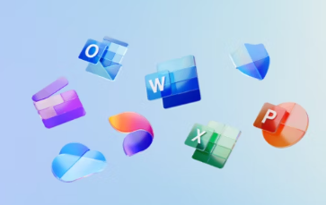
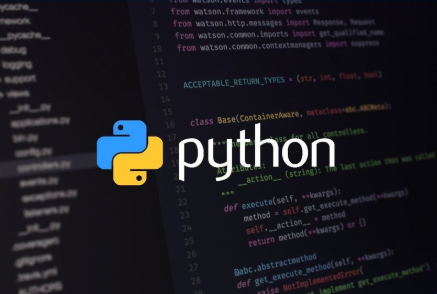
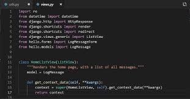
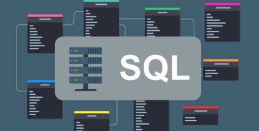

MI FORMACIÓN ACADÉMICA
En 2019, completé mis estudios de secundaria en el colegio San Ricardo Pampuri, ubicado en Bogotá, D.C.. Durante estos años adquirí una base académica sólida que me permitió desarrollar habilidades en distintas áreas, preparándome para los estudios superiores.

En el año 2020, inicié mis estudios en Ingeniería de Sistemas en la Universidad Piloto de Colombia, donde actualmente sigo en formación. A lo largo de estos años, he adquirido conocimientos en desarrollo de software, bases de datos, redes y tecnologías de la información. Además, he fortalecido mis habilidades en lógica de programación y diseño de sistemas computacionales.
CERTIFICACIONES
Complementé mi formación con certificaciones especializadas en áreas clave del desarrollo tecnológico:
- Introducción a la Programación y SQL Básico
- Desarrollo Web con Python y Django
- Gestión de proyectos
- Redes de nueva generación
- Calidad de la experiencia y calidad del software
En el año 2024 inicié un proceso de especialización en el área de Docencia Universitaria, cursando el primer módulo. A través de este programa, estoy adquiriendo conocimientos sobre estrategias pedagógicas, enseñanza en entornos tecnológicos y metodologías para la educación superior.
PROGRAMAS
Lo he utilizado para la creación y gestión de documentos en Word, hojas de cálculo en Excel, presentaciones en PowerPoint y correos electrónicos con Outlook. También he trabajado con OneDrive para almacenamiento en la nube y Teams para colaboración en proyectos.
He desarrollado pequeños proyectos y prácticas en la universidad, especialmente en áreas como lógica de programación y desarrollo web. También lo he usado en ejercicios de automatización y procesamiento de datos.
Utilicé Django para construir aplicaciones web en un curso/certificación de desarrollo web. Trabajé con modelos de bases de datos, vistas y autenticación de usuarios.
He manejado bases de datos utilizando SQL en la universidad y en proyectos personales. Realicé consultas para extraer información, modificar registros y estructurar bases de datos en MySQL y PostgreSQL.
Lo he trabajado en programación orientada a objetos en la universidad, implementando estructuras de datos, algoritmos y pequeños sistemas de escritorio. También he hecho pruebas con desarrollo móvil para Android.
Exploré esta herramienta para facilitar el desarrollo de aplicaciones sin necesidad de programar tanto código, lo cual ayuda a agilizar ciertos procesos de desarrollo de software.
| CATEGORÍA | LO QUE HE APRENDIDO | LO QUE QUIERO MEJORAR |
|---|---|---|
| Desarrollo Web | Fundamentos de HTML, CSS y JavaScript | Profundizar en backend y frameworks |
| Diseño | Principios básicos de UI/UX | Crear interfaces más atractivas |
| Programación | Lógica de programación y estructuras de datos | Optimizar mi código y buenas prácticas |
| Contenido | Grabar videos sobre lo que me interesa | Editarlos y compartirlos en redes |